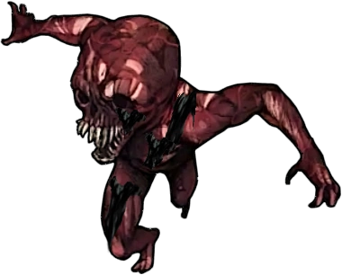

Zumbi de Sangue
VD 20
O zumbi de sangue é uma criatura comum de se aparecer na realidade, é um ser brutal que através da sua carne super sensivel, exergar através da dor. Ele não possui enigma do medo.

Diabo:Basico e perfeito para acabar com humanos normais

Deus da Morte:Fraco.